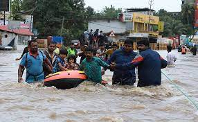

|
2018 Kerala floods
On 16 August 2018, severe floods affected the south Indian state Kerala, due to unusually high rainfall during the monsoon season.[3][4][5] It was the worst flood in Kerala in nearly a century.[6] Over 483 people died, and 15 are missing.[7] About a million[8][9] people were evacuated, mainly from Chengannur,[10] Pandanad,[11] Edanad, Aranmula, Kozhencherry, Ayiroor, Ranni, Pandalam, Kuttanad, Malappuram, Aluva, Chalakudy, Thrissur, Thiruvalla, Eraviperoor, Vallamkulam, North Paravur, Chellanam, Vypin Island and Palakkad. All 14 districts of the state were placed on red alert.[4][12] According to the Kerala government, one-sixth of the total population of Kerala had been directly affected by the floods and related incidents.[13] The Indian government had declared it a Level 3 Calamity, or "calamity of a severe nature".[14][15] It is the worst flood in Kerala after the great flood of 99 that took place in 1924.
35[16] out of the 54[17] dams within the state were opened, for the first time in history. All five overflow gates of the Idukki Dam were opened at the same time, and for the first time in 26 years 5 gates of the Malampuzha dam of Palakkad were opened.[18] Heavy rains in Wayanad and Idukki have caused severe landslides and have left the hilly districts isolated.[19][13] The situation was regularly monitored by the National Crisis Management Committee, which also coordinated the rescue and relief operations as the dam got opened it has disrupted many lives living nearby.[20]

molestiae fuga natus quia totam, numquam dicta ipsa voluptas repellat explicabo! Unde, fugit possimus. Ab consequatur quis nisi ex quaerat tempora accusamus eos nihil vitae, magni ad nesciunt voluptate voluptas, debitis nulla blanditiis tempore possimus id? Itaque repellat iure nesciunt ab quo. Incidunt, modi neque, itaque illum consequatur placeat accusamus ad quasi, natus pariatur quisquam sit suscipit distinctio quaerat cupiditate facere fuga hic explicabo minima. Impedit modi velit unde optio, quod eaque expedita distinctio autem esse, necessitatibus tenetur? Distinctio velit ipsam ratione tempora expedita earum! Veniam nulla error molestiae magnam voluptatem unde saepe quis dolores, officiis molestias! Aspernatur nulla enim incidunt sapiente sed perspiciatis assumenda corporis consectetur libero omnis. Vel sint dignissimos, repudiandae cupiditate a magnam, modi perferendis iure, culpa ut qui tempore pariatur laboriosam maiores nulla soluta laudantium doloribus? Accusamus possimus amet ipsa corrupti numquam alias nisi nulla eum libero! Iure voluptate nihil amet, error adipisci distinctio aliquid quaerat alias fugit totam, quae ea quos quis porro quod culpa nam pariatur beatae quasi obcaecati iste! Nemo id assumenda accusimos reiciendis?
|
|